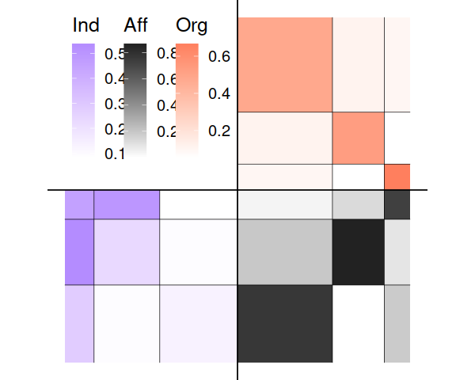

This is an R package implementation of a Stochastic Block Model for Multilevel Network (MLVSBM) as described in Chabert-Liddell, Barbillon, Donnet and Lazega (2021) https://doi.org/10.1016/j.csda.2021.107179.
Details about generalized multilevel networks which are supported by the latest dev version on github can be found at “http://www.theses.fr/en/2022UPASM005” (Chapter 2.E).
Installation
You can install the latest released version of MLVSBM from cran
install.packages("MLVSBM")or the latest dev version which includes support for generalized multilevel networks from github with:
devtools::install_github("Chabert-Liddell/MLVSBM")Overview and examples
The package deals with multilevel network defined as the junction of two interaction networks (adjacency matrices) linked by an affiliation relationship (affiliation matrix).
First, we’re going to simulate a multilevel network with 100 individuals and 3 clusters of individuals for the lower level and 50 organizations and 3 clusters for the upper level. The inter-organizational level will have an assortative structure and will be undirected, the inter-individual’s one a core-periphery structure and will be directed. Affiliation matrix will be generated by a power law and the dependence between the structure of the two levels will be strong.
set.seed(123)
my_mlvsbm <- MLVSBM::mlvsbm_simulate_network(
n = list(I = 60, O = 40), # Number of nodes for the lower level and the upper level
Q = list(I = 3, O = 3), # Number of blocks for the lower level and the upper level
pi = c(.5, .3, .2), # Block proportion for the upper level, must sum to one
gamma = matrix(c(.8, .1, .1, # Block proportion for the lower level,
.1, .8, .1,
.1, .1, .8), # each column must sum to one
nrow = 3, ncol = 3, byrow = TRUE),
alpha = list(I = matrix(c(.1, .1, .3,
.1, .2, .5,
.1, .5, .5),
nrow = 3, ncol = 3, byrow = TRUE), # Connection matrix
O = matrix(c(.5, .1, .1,
.1, .5, .1,
.1, .1, .5),
nrow = 3, ncol = 3, byrow = TRUE)),# between blocks
directed = list(I = TRUE, O = FALSE), # Are the upper and lower level directed or not ?
affiliation = "preferential", # How the affiliation matrix is generated
no_empty_org = FALSE) # May the affiliation matrix have column suming to 0The network is stocked in an R6 object of type MLVSBM.
Now, we are going to create a multilevel network object from 2 existing adjacency matrix and an affiliation matrix :
lower_level <- my_mlvsbm$adjacency_matrix$I # matrix of size nI x nI
upper_level <- my_mlvsbm$adjacency_matrix$O # matrix of size nO x nO
affiliation <- my_mlvsbm$affiliation_matrix # matrix of size nI x nO
my_mlvsbm2 <- MLVSBM::mlvsbm_create_network(X = list(I = lower_level, O = upper_level),
A = affiliation)We can now infer the parameters, blocks and edge probabilities of our network by using the mlvlsbm_estimate_network() function on an MLVSBM object. It will return the best model for this network as another R6 object of type FitMLVSBM.
fit <- MLVSBM:::mlvsbm_estimate_network(my_mlvsbm)
#>
#> [1] "Infering lower level :"
#> [1] "# blocks: 3, ICL = -1753.45290053552 !"
#>
#> [1] "Infering upper level :"
#> [1] "# blocks: 3, ICL = -429.333753035444 !"
#> [1] "======= # Individual clusters : 3 , # Organisation clusters 3, ICL : -2161.44453717678========"
#> [1] "======= # Individual blocks : 3 , # Organizational blocks 3, ICL : -2161.44453717678========"
#> [1] "ICL for independent levels : -2182.78665357096"
#> [1] "ICL for interdependent levels : -2161.44453717678"
#> [1] "=====Interdependence is detected between the two levels!====="Exploring the results
Some generic functions allow an easy access to the most useful parameters:
print(fit)
#> Multilevel Stochastic Block Model -- bernoulli variant
#> =====================================================================
#> Dimension = ( 60 40 ) - ( 3 3 ) blocks.
#> =====================================================================
#> * Useful fields
#> $independent, $distribution, $nb_nodes, $nb_clusters, $Z
#> $membership, $parameters, $ICL, $vbound, $X_hatWe can also plot a synthetic view of the network, with the fitted model:
plot(fit)
#> Coordinate system already present. Adding new coordinate system, which will replace the existing one.
As well as obtain the model parameters:
coef(fit)
#> $alpha
#> $alpha$I
#> [,1] [,2] [,3]
#> [1,] 0.23072817 0.5382933 0.09444543
#> [2,] 0.49659089 0.4545821 0.08339372
#> [3,] 0.09614086 0.2840693 0.13421325
#>
#> $alpha$O
#> [,1] [,2] [,3]
#> [1,] 0.66670837 0.09845986 0.0557177
#> [2,] 0.09845986 0.48056388 0.1137974
#> [3,] 0.05571770 0.11379738 0.5299402
#>
#>
#> $pi
#> $pi$O
#> [1] 0.1499768 0.5496535 0.3003697
#>
#> $pi$I
#> [1] 0.3804705 0.1694755 0.4500540
#>
#>
#> $gamma
#> [,1] [,2] [,3]
#> [1,] 0.09064248 0.19243672 8.692712e-01
#> [2,] 0.72734754 0.03843131 1.307266e-01
#> [3,] 0.18200998 0.76913196 2.105228e-06And the prediction of the block clustering as well as the probability of a link between two individuals or two organizations:
pred <- predict(fit)
pred$nodes
#> $I
#> I1 I2 I3 I4 I5 I6 I7 I8 I9 I10 I11 I12 I13 I14 I15 I16 I17 I18 I19 I20
#> 1 3 3 1 3 2 1 2 1 3 1 3 3 1 3 3 1 1 3 1
#> I21 I22 I23 I24 I25 I26 I27 I28 I29 I30 I31 I32 I33 I34 I35 I36 I37 I38 I39 I40
#> 1 1 3 1 3 3 1 1 1 1 3 1 2 2 1 3 2 3 3 3
#> I41 I42 I43 I44 I45 I46 I47 I48 I49 I50 I51 I52 I53 I54 I55 I56 I57 I58 I59 I60
#> 2 1 1 1 2 2 1 3 3 1 2 1 3 1 2 2 2 1 3 3
#>
#> $O
#> O1 O2 O3 O4 O5 O6 O7 O8 O9 O10 O11 O12 O13 O14 O15 O16 O17 O18 O19 O20
#> 3 2 2 2 1 2 1 1 3 2 3 3 3 2 2 2 2 3 2 2
#> O21 O22 O23 O24 O25 O26 O27 O28 O29 O30 O31 O32 O33 O34 O35 O36 O37 O38 O39 O40
#> 2 3 2 3 2 2 1 1 1 2 2 3 2 3 2 2 3 2 2 3
pred$dyads$I[1:5, 1:5]
#> I1 I2 I3 I4 I5
#> I1 0.00000000 0.09444600 0.09444600 0.23073017 0.09444714
#> I2 0.09614226 0.00000000 0.13421327 0.09614210 0.13421295
#> I3 0.09614226 0.13421327 0.00000000 0.09614210 0.13421295
#> I4 0.23073020 0.09444601 0.09444601 0.00000000 0.09444714
#> I5 0.09614339 0.13421294 0.13421294 0.09614322 0.00000000Some others useful output
Output of the algorithm are stocked in the MLVSBM and FitMLVSBM objects. The MLVSBM object stocks information of the observed or simulated network and a list of all the fitted SBM and MLVSBM models.
my_mlvsbm$ICL # A data frame of the inferred models
#> index Q_I Q_O ICL
#> 1 1 3 3 -2161.445
my_fit <- my_mlvsbm$fittedmodels[[which.max(my_mlvsbm$ICL$ICL)]] # The fitted model with index the highest ICL
my_mlvsbm$ICL_sbm # The ICL of the SBM
#> $lower
#> [1] -Inf -Inf -1753.453 -Inf -Inf -Inf -Inf
#> [8] -Inf -Inf -Inf
#>
#> $upper
#> [1] -Inf -Inf -429.3338 -Inf -Inf -Inf -Inf
#> [8] -Inf -Inf -Inf
my_sbm_lower <- my_mlvsbm$fittedmodels_sbm$lower[[3]] # A fitted SBM for the lower level with 3 blocks
my_sbm_upper <- my_mlvsbm$fittedmodels_sbm$upper[[2]] # A fitted SBM for the upper level with 2 blocksYou can also get the parameters and the clustering of the fitted model from the FitMLVSBM object as follows:
fit$parameters # The connectivity and membership parameters of the model
#> $alpha
#> $alpha$I
#> [,1] [,2] [,3]
#> [1,] 0.23072817 0.5382933 0.09444543
#> [2,] 0.49659089 0.4545821 0.08339372
#> [3,] 0.09614086 0.2840693 0.13421325
#>
#> $alpha$O
#> [,1] [,2] [,3]
#> [1,] 0.66670837 0.09845986 0.0557177
#> [2,] 0.09845986 0.48056388 0.1137974
#> [3,] 0.05571770 0.11379738 0.5299402
#>
#>
#> $pi
#> $pi$O
#> [1] 0.1499768 0.5496535 0.3003697
#>
#> $pi$I
#> [1] 0.3804705 0.1694755 0.4500540
#>
#>
#> $gamma
#> [,1] [,2] [,3]
#> [1,] 0.09064248 0.19243672 8.692712e-01
#> [2,] 0.72734754 0.03843131 1.307266e-01
#> [3,] 0.18200998 0.76913196 2.105228e-06
fit$Z # The membership of each nodes
#> $I
#> I1 I2 I3 I4 I5 I6 I7 I8 I9 I10 I11 I12 I13 I14 I15 I16 I17 I18 I19 I20
#> 1 3 3 1 3 2 1 2 1 3 1 3 3 1 3 3 1 1 3 1
#> I21 I22 I23 I24 I25 I26 I27 I28 I29 I30 I31 I32 I33 I34 I35 I36 I37 I38 I39 I40
#> 1 1 3 1 3 3 1 1 1 1 3 1 2 2 1 3 2 3 3 3
#> I41 I42 I43 I44 I45 I46 I47 I48 I49 I50 I51 I52 I53 I54 I55 I56 I57 I58 I59 I60
#> 2 1 1 1 2 2 1 3 3 1 2 1 3 1 2 2 2 1 3 3
#>
#> $O
#> O1 O2 O3 O4 O5 O6 O7 O8 O9 O10 O11 O12 O13 O14 O15 O16 O17 O18 O19 O20
#> 3 2 2 2 1 2 1 1 3 2 3 3 3 2 2 2 2 3 2 2
#> O21 O22 O23 O24 O25 O26 O27 O28 O29 O30 O31 O32 O33 O34 O35 O36 O37 O38 O39 O40
#> 2 3 2 3 2 2 1 1 1 2 2 3 2 3 2 2 3 2 2 3
fit$vbound # A vector of the varational bound of the VEM algorithm
#> [1] -2088.490 -2088.447 -2088.447 -2088.447
tau <- fit$membership # The variational parameters of the model
pred <- fit$X_hat # The links predictions for each level